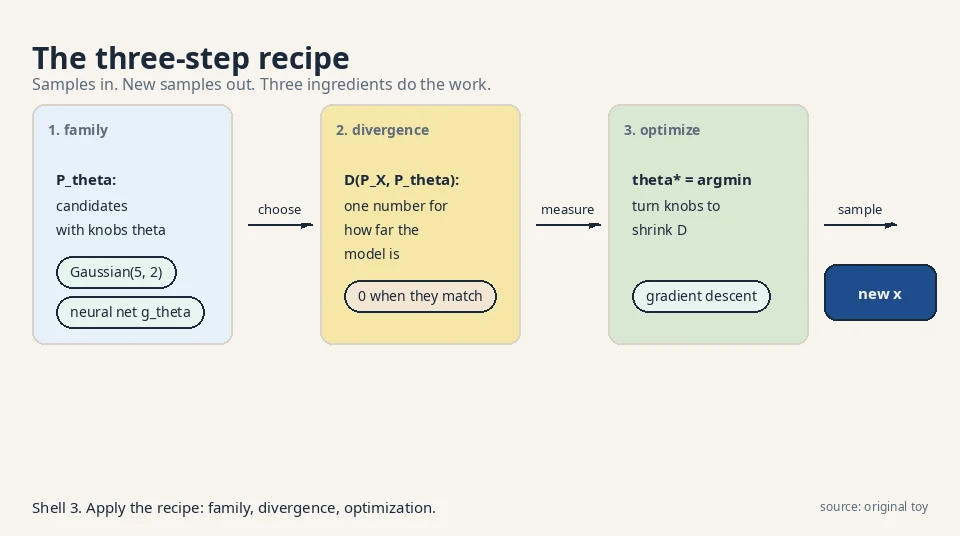
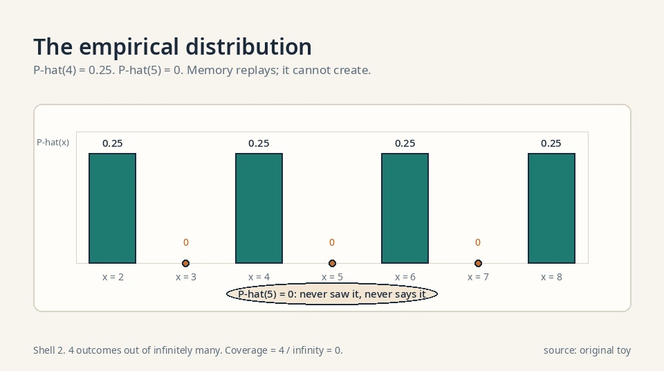
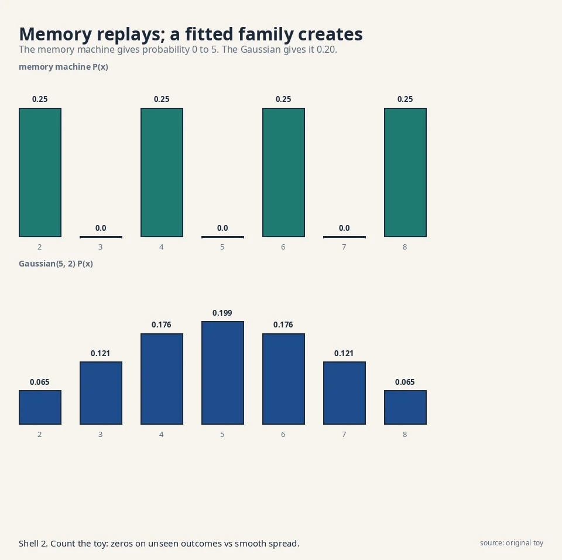
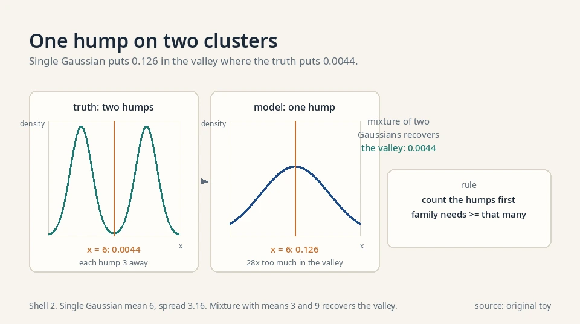
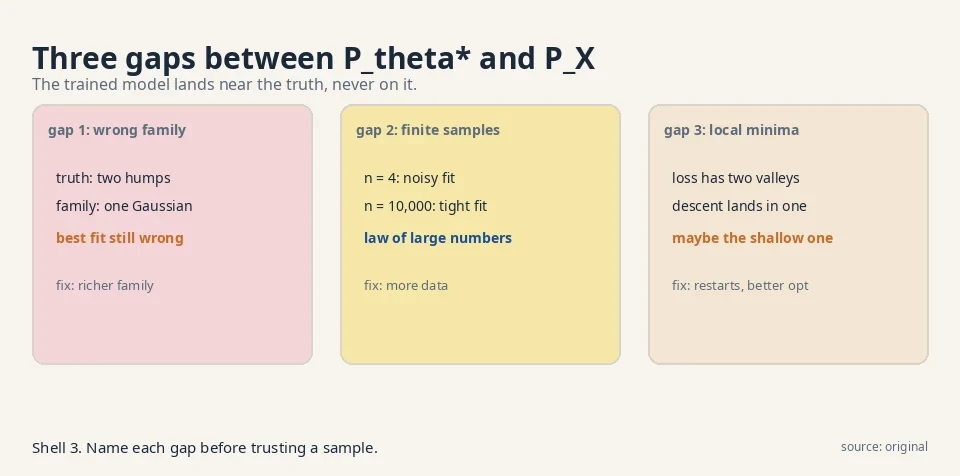
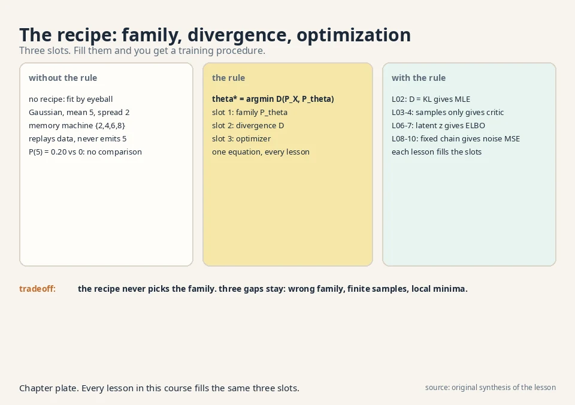

Lecture 1: Teaching a Machine to Create
Video blocked (ad-blocker or local file mode).
Watch on YouTubeVideo not loading? Watch on YouTube
The lecture video for this lesson. Timestamps in the text link to the exact moment.
The task: make what does not exist
Look at a face generator. You press a button. A new face appears. It is not any real person. Nobody took that photo. The machine made it.
Now ask what the machine actually knew. It never saw the laws of anatomy. It saw photos. Thousands of real faces. From those photos, it had to learn something about what faces look like in general, and then produce a new one.
Put this in plain math terms, because the whole course lives in these terms. There is an unknown data distribution, written P_X. A distribution is a rule that assigns probabilities to outcomes. P_X is the true rule behind your data: the rule that makes real faces more likely than random noise. You never see P_X itself. You only see samples: the dataset D = {x_1, x_2, …, x_n}, each drawn from P_X. “Drawn from” means each sample is one random outcome of that rule.
The job of a generative model has two parts. First, estimate P_X from the samples. Second, learn to sample from it: produce new x that look like fresh draws from P_X. Everything in this course is one of these two steps or the math that makes them possible.
unknown P_X --> dataset D (samples only) --> model P_theta
|
v
new samples x~
The three-step recipe
The lecture gives one recipe that every generative model follows. Three ingredients, in order: a family, a divergence, an optimization. Each one is a decision with a price.
The parametric family: your guess about the shape of the answer
A parametric family is a set of candidate distributions with knobs. Written P_θ. The θ (theta) is the knob setting: a list of numbers. Choose θ, you get one distribution. The family is your guess about the shape of the answer.
Three families appear in this course, and the choice is the first fork in the road:
family knobs theta you get Gaussian mean, spread a bell curve neural net g_theta millions of weights warped noise (samples only) Markov chain of noisy steps step sizes beta_t diffusion models (Lesson 8)
The decision rule: the family must be rich enough to contain something close to P_X, and simple enough that you can fit its knobs from n samples. A family of one Gaussian cannot fit two separate clusters of faces. No knob setting fixes that. A neural network family can fit almost anything, but it needs far more data and compute. Richness fights sample efficiency. Every architecture choice in generative modeling is this trade-off.
The divergence metric: one number for “how far”
A divergence metric is a number that says how far your model P_θ is from the truth P_X. It must be zero when the two rules match and positive otherwise. The lecture names three, and the course spends a lesson on each:
divergence lesson key personality KL 2 punishes ignoring real outcomes (mode-covering) f-divergences 3 a whole family. GANs fall out of it Wasserstein 5 never goes flat, even on disjoint supports
KL, the first row, in one sentence: KL(P_X || P_θ) = E_{P_X}[log(P_X/P_θ)], the average surprise of the model’s probabilities under the truth. It is large when the model ignores outcomes the truth produces. A mode is a peak of a distribution: a region where probability concentrates. Mode-covering means the model stretches to cover every peak of the truth. Lesson 2 defines KL in full.
The decision rule: pick the divergence you can actually compute from samples. That constraint drives Lessons 2 through 5. A beautiful divergence you cannot estimate is useless.
The optimization: turn the knobs
The third ingredient is the search:
theta* = argmin_theta D(P_X , P_theta)
Read it as: the winning knob setting is the one that brings the model closest to the truth, measured by your divergence. Training a generative model is this search. The lecture’s honest warning: in practice we minimize an approximation of the divergence, with sample averages standing in for the true distribution, so the trained model only lands near P_X, never exactly on it.

First attempt: the memory machine
The simplest machine that can “create” is a parrot. It memorizes the dataset. To make a new sample, it picks a random training point and returns it. No math, no learning.
The empirical distribution
The memory machine has a formal name: the empirical distribution P̂. It puts probability 1/n on each training point and 0 everywhere else:
P_hat(x) = (1/n) * sum over data of delta(x - x_i)
On {2, 4, 6, 8}: P̂(4) = 0.25, P̂(5) = 0. The memory machine samples from P̂. Maximum likelihood on P̂ is memorization by definition: the empirical distribution is the closest distribution to the data with zero smoothness. Every generative model is an attempt to smooth P̂ into something that generalizes. The family is the smoother. The divergence decides how much smoothing the data supports.

Watch it on a toy. The dataset has four exam scores: {2, 4, 6, 8}. The memory machine stores them. Ask it for five new samples. It draws at random from the list: 4, 8, 2, 4, 6. Every output is a perfect, plausible exam score. It looks like it learned the distribution.
The counting argument
The dataset has n samples. The real distribution P_X can produce infinitely many outcomes. Any rule that only replays the n it saw assigns zero probability to everything new. It learned the samples, not the rule. The job asks for the rule.
Count it on the toy. The memory machine assigns P(x) = 0.25 to each of {2, 4, 6, 8} and P(x) = 0 to every other number. Ask for a 5. The machine says 5 has probability 0. It can never output it. With n = 4, the machine covers 4 outcomes out of infinitely many. Its coverage is 4 / infinity = 0.
Why copies are not creation
For images, this failure is fatal in a second way. A memorized photo is a copy, not a creation. A generator that can only return its training photos is a database with extra steps. It also grows with the data: a billion photos means a billion stored photos.
The working test is the nearest-neighbor check. Take a generated sample. Find its closest training image. If the distance is near zero, the model memorized. Real generation keeps that distance well above zero. Lesson 5 turns this into evaluation metrics.
So the first attempt teaches the real demand: a generative model must be able to produce outcomes it never saw, and it must do so in proportion to how likely they are under P_X. That means it must generalize. Memorization is the opposite of generalization.

The key question
How do you assign probabilities to things you never saw, using only the things you did?
The new idea: fit a family, then sample from it
The recipe answers the question in two moves. First, pick a family P_θ smooth enough that probability spreads between the samples. Second, fit θ so the family hugs the data. Then sample from the fitted family, not from the dataset.
The Gaussian fit, worked by hand
The dataset is {2, 4, 6, 8}. Choose the family of Gaussian distributions (the bell curve). A Gaussian has two knobs: the mean μ (the center) and the standard deviation σ (the width). Fit by matching the data’s center and spread:
data: 2 4 6 8 mean: (2+4+6+8)/4 = 5 spread: typical distance from 5 is 2, so sigma = 2 model: P_theta = Gaussian(mean 5, spread 2)
Now sample from the model. A Gaussian with mean 5 and spread 2 can produce 3.1, 5.7, 6.9, 4.2: numbers never in the dataset, but plausible under the fitted rule. The machine created. This is the smallest possible generative model, and it shows the whole pattern: family, fit, sample.
The density, on paper: P(5) = 0.1995
The plate claims the Gaussian assigns P(5) = 0.20 and P(3) = 0.12. Verify both from the Gaussian formula. For a Gaussian with mean μ and standard deviation σ, the density at x is:
p(x) = 1 / (sigma * sqrt(2 * pi)) * exp( -(x - mu)^2 / (2 * sigma^2) )
With μ = 5 and σ = 2: 1/(2·2.5066) = 0.1995. That is the density at the center, x = 5. At x = 3, two units left of center: 0.1995 · exp(−4/8) = 0.1995 · 0.6065 = 0.1210. The plate’s 0.20 and 0.12 are these two numbers rounded. The memory machine assigns exactly 0 to both points. The gap between 0.20 and 0 is the whole lesson: smoothness turns four seen points into probability on every unseen point.
Two humps need two humps: the mixture toy
The single Gaussian has one hump. Watch it fail on two clusters. The truth is a 50/50 mix: half the points near 3 (Gaussian with mean 3, spread 1), half near 9 (mean 9, spread 1). The best single Gaussian fit has mean 6 (the overall center) and variance 10 (the overall spread: E[x²] = 46, minus 6² = 10). Its spread is σ = 3.16.
Now score x = 6, the valley between the clusters. The truth’s density there: each hump is 3 units away, and the Gaussian density 3 spreads from center is 0.0044 per hump, so the truth gives 0.0044. The single Gaussian’s density at its own center 6: 1/(3.16·2.5066) = 0.126. The model puts 0.126 where the truth puts 0.0044: 28 times too much probability in the valley. Samples from the valley are blends: not near 3, not near 9, belonging to neither cluster.
The fix is a family with two humps: a mixture of two Gaussians with means 3 and 9 and weights 0.5 each. Its density at 6 is exactly the truth’s 0.0044. The decision rule from the last section now has teeth: count the humps in the data, then pick a family with at least that many. A neural network family learns the hump count from data, which is why it is the default for complex data. But it pays in data and compute for that flexibility.

Smoothness spreads probability
Why did the Gaussian succeed where memory failed? Because it is smooth. Smoothness means nearby outcomes get nearby probabilities. The samples at 4 and 6 pull probability up at 5, the point between them. The plate above counts it: the Gaussian assigns P(5) = 0.20, P(3) = 0.12, while the memory machine assigns 0 to both. Smoothness is the mechanism that turns seen outcomes into probability on unseen ones.
flowchart LR
D["D: samples from P_X"] --> F["fit knobs theta"]
F --> M["P_theta* close to P_X"]
M --> S["new samples x~"]
Discriminative versus generative
A discriminative model learns P(y|x): given the input, predict the label. A spam filter learns P(spam|email). A generative model learns P(x): the distribution of emails themselves. The discriminative model answers questions about data it is given. The generative model produces the data.
The two need different supervision. The spam filter needs labeled emails. The email generator needs only emails. And the generative model can do the discriminative job: Bayes’ rule turns P(x|y) and P(y) into P(y|x). The reverse is not true: a spam filter cannot write an email. Generative is the harder, more general task. This course is all generative.
Sampling: how a computer draws from P_θ
Fitting P_θ is half the job. The other half is drawing samples from it. For a coin with P(heads) = 0.5: draw u uniformly from [0,1]. Output heads if u < 0.5, else tails. This is inverse-CDF sampling: the uniform draw picks a quantile, the distribution turns it into an outcome.
For a Gaussian N(μ, σ²): draw ε ~ N(0,1), output μ + σ·ε. Same pattern: easy randomness in, shaped randomness out. For a neural push-forward: draw z ~ N(0,1), output g_θ(z). Every sampler in this course is this pattern: a simple source of randomness pushed through a shaping function. The shaping function is the model.
The decision rule for choosing a family
One step remains mysterious: what does “hugs the data” mean, in numbers? That is the divergence metric, and it is Lesson 2. But the family choice already has a decision rule you can use now. If the data has k separate clusters and your family has one hump, you will fail. Count the humps first. Then pick a family with at least that many. A mixture of k Gaussians has k humps. A neural network can learn the humps from data. The wrong family is the first of the three gaps below, and it is the one no amount of training fixes.
Explicit versus implicit: where the course forks
The push-forward section below exposes a fork that runs through the whole course. Some models write down a density formula. Others give only samples. The fork decides which training roads are open.
An explicit model defines p_θ(x) as a formula you can evaluate. The Gaussian above is explicit: plug in x, get a number. An autoregressive model builds its density one piece at a time: each piece’s probability is conditioned on all the pieces before it. The chain rule multiplies those per-piece probabilities into the full density (Lesson 10 develops this family). VAEs are explicit-ish: the ELBO bounds a density the model defines (Lessons 6-7). Normalizing flows, one more family, are explicit by construction: they warp noise through invertible maps, and the change-of-variables formula gives the exact density. [uncertain] Flows appear in the lecture’s family list but are not developed in this course’s ten lessons.
An implicit model defines only a sampling procedure: run the procedure, get x, but no formula for p_θ(x) exists. The push-forward generator is the pure case. You can draw a million samples and still not answer “what is P_θ(3.1)?”.
The fork decides the training road. Maximum likelihood (Lesson 2) needs log p_θ(x) per data point: explicit models only. The adversarial road (Lessons 3-4) needs only samples: it was built for implicit models. This is why the course has two halves. The fork is not a preference. It is a constraint imposed by what the model can compute.
| Explicit | Implicit | |
|---|---|---|
| You get | A formula for p_θ(x) | A procedure that emits x |
| Example | Gaussian, autoregressive, VAE, flows | GAN generator (push-forward) |
| Training road | Maximum likelihood (Lesson 2) | Adversarial critic (Lessons 3-4) |
| Price | The formula constrains the architecture | No density, no likelihood, needs a critic |
The push-forward trick
Most modern models generate by warping noise. Start with a random variable z that you understand completely: the standard Gaussian, mean 0, spread 1. You know how to sample it. Now pass it through a deterministic function g_θ (a neural network with knobs θ). The output x = g_θ(z) is a new random variable. It has some distribution. Call it P_θ.
z ~ Normal(0, 1) sample easy noise
|
g_theta (neural net)
|
x = g_theta(z) some new distribution P_theta
This is the push-forward method: push simple noise forward through a function and get a complex distribution. The lecture’s key point: the neural network’s output gives you samples from P_θ, not P_θ itself. You can draw x’s all day, but you cannot read off the probability of any one x. This gap, samples without a formula for the density, is what forces the adversarial approach in Lesson 4. Keep it in mind.
Samples without a density
Trace what you can and cannot compute. You can sample z in one line of code. You can push it through g_θ and get x. Repeat a million times and you have a million samples. What you cannot do is answer: what is P_θ(3.1)? The network is a one-way street. Noise goes in, samples come out, and the probability of any single output is locked inside the warp. No closed form exists for a deep network’s push-forward density.
Where the density gap bites
This gap forks the whole course. Lesson 2 teaches maximum likelihood, which needs log P_θ(x) for each data point. Push-forward models cannot supply it. So the course builds a second road: Lessons 3 and 4 measure the divergence using only samples, with a critic network standing in for the missing density. VAEs and diffusion models take the first road (tractable likelihoods). GANs take the second (samples only). The push-forward trick is why both roads exist.

And a hard question the lecture asks now: how do you compute a divergence between P_X and P_θ when you know neither density, only samples from both? That is the problem Lessons 2 and 3 solve.
The honest price: three approximations
The recipe is honest about what it costs. Every real model pays three approximations, and the trained model lands at P_θ*, not at P_X.
Gap 1: the family may be wrong
If P_X is two separate clusters and P_θ is one Gaussian, no knob setting fixes that. The best fit is still wrong. The fix is a richer family, but richness costs data and compute. This gap is decided before training starts, at architecture time.
Gap 2: expectations become sample averages
The true divergence integrates over all of P_X. In practice we average over the n samples we have. The law of large numbers says the average approaches the truth as n grows, but n is always finite. With n = 4 exam scores, the fitted Gaussian is a rough guess. With n = 10,000, it is tight. Small n, noisy fit.
Gap 3: the search can stall
The optimization is gradient-based in high dimensions. It can stall in a bad local minimum. The knob setting we find is a local winner, not the global one. Restarts and better optimizers help, but no method guarantees the global best.
These three gaps explain why every generative model is judged by its samples, not by a proof. Lesson 5 gives the judging tools.

| Ingredient | What it is | The catch |
|---|---|---|
| Parametric family P_θ | Candidate distributions with knobs | The truth may not be in the family |
| Divergence metric D | A distance between distributions | Computed from samples, not densities |
| Optimization over θ | Turn knobs to shrink D | Local minima, noisy gradients |
Where the families run in real systems
Every production generator sits in one cell of the explicit/implicit table, and its training road follows.
Explicit, autoregressive: GPT-4o, Claude, Gemini 2.5, Llama 4, DeepSeek-V3. All are decoder-only transformers trained with next-token cross-entropy, which Lesson 2 proves is forward KL to the text distribution. Their densities are exact by the chain rule. Their price is Lesson 10’s: strictly sequential sampling.
A latent variable is a hidden variable the model invents to explain the data: never observed, but useful for generation. The latent space is the space of its possible values. Explicit, latent-variable: Stable Diffusion 1.x/2.x runs diffusion in a VAE’s latent space (Rombach et al. 2022), so the VAE codec is explicit machinery inside a diffusion system. The diffusion ELBO (Lessons 8-9) is its training road.
Implicit, adversarial: StyleGAN2 (Karras et al. 2020) trains a push-forward generator with the non-saturating logistic loss plus R1 regularization, the Lesson 4 fix with the critic kept honest. BigGAN (Brock et al. 2019) scales the same game with class conditioning.
Implicit-become-explicit, diffusion: DDPM (Ho et al. 2020) learns a denoiser, no adversary. Stable Diffusion 3.5 (2024) replaced the UNet with an MMDiT transformer (8B parameters) and trains with rectified flow. FLUX.1 (Black Forest Labs, 2024) is a 12B rectified flow transformer. Sora (OpenAI, 2024) runs a diffusion transformer on spacetime patches of video latents.
Autoregressive images: GPT-4o’s native image generation (2025) is autoregressive per OpenAI’s own system card addendum, not diffusion. [uncertain] Midjourney v7 and DALL-E 3 internals are not public.
The pattern: the field moved from implicit/adversarial (GAN era) to explicit latent-variable (diffusion era) because the training road is stabler, and the newest image systems are autoregressive again, reusing the transformer machinery of language models.
Model facts in this section verified October 2026. Anything not verifiable is marked [uncertain].
Videos for this lesson
Second lecture video for this lesson: the problem setting, worked on the board. If the embed is blocked: watch on YouTube.
External explainer: how models like Stable Diffusion and Midjourney generate from noise, in plain English. If the embed is blocked: watch on YouTube.

A machine that learns the probability rule behind a dataset and then produces new samples from that rule. Given photos, it learns P_X (the distribution of real photos) and returns new photos that were never in the dataset. A classifier answers “which category is this?” for an input it is given. A generative model produces the input itself. The classifier models P(label | x). The generator models P(x).
Data {2, 4, 6, 8}. Pick the Gaussian family: two knobs, mean and spread. Fit: mean = 5, spread = 2. Sample from Gaussian(5, 2): outputs like 3.1, 5.7, 6.9, numbers never seen in training. That is the full recipe: family, fit, sample. The plate counts the key fact: P(5) = 0.20 under the model, 0 under memorization. From the divergence. You turn the knobs to shrink D(P_X, P_θ). In this toy the fit was done by eye (match center and spread). Lesson 2 replaces the eye with maximum likelihood.
Memorization replays old samples. It assigns zero probability to anything new. In the toy, the memory machine on {2, 4, 6, 8} can never output 5. Real creation needs probability on unseen outcomes, which requires a smooth family fitted to the data, like the Gaussian with mean 5 and spread 2 that can output 3.1 or 6.9. Only when the task is retrieval, like a database lookup. For generation it is a failure mode with a name: overfitting. Lesson 5 shows how to detect it.
Sample easy noise z from a known distribution like the standard Gaussian, then push it through a deterministic neural network g_θ. The output x = g_θ(z) follows some new distribution P_θ, and changing the knobs θ changes that distribution. It gives samples from P_θ without a formula for its density. Because divergences are defined through densities. If you cannot write down P_θ, you need a way to measure the distance to P_X using only samples. That is exactly what the variational divergence machinery of Lesson 3 provides.
The single hump stretches to cover both clusters and puts mass in the valley between them, where the truth has none. Samples from the valley look like blends: not one thing or the other. No knob setting fixes it. The fix is a richer family: a mixture of two Gaussians, or a neural net. Count the humps in the data first. Plot histograms or run a quick clustering pass. If the data has k clear clusters and your family has one hump, stop and change the family. Architecture first, optimization second.
Your friend. The training objective is a sample average standing in for a true expectation. The law of large numbers says the average concentrates on the truth as n grows. With n = 4, the fitted knobs inherit the noise of those four points. With n = 10,000, the noise washes out. This is gap 2 of the honest price. No. More data shrinks gap 2 only. If the family cannot represent P_X, infinite data still converges to the wrong answer: the closest member of the wrong family. Gaps are independent. Each needs its own fix.
First, the family. Rainfall is non-negative and often zero, with rare huge storms: a mixture of a spike at 0 and a heavy-tailed distribution for positive amounts. A single Gaussian fails (it predicts negative rain). Second, the divergence. Start with KL and maximum likelihood, since the density is tractable. Third, the optimization. Fit the mixture weights and tail parameters by gradient ascent on the log-likelihood of historical records. The samples. Generate 10,000 synthetic days and compare the histogram to the real one: fraction of dry days, the 99th percentile storm size. The three gaps predict the failure modes: wrong tail shape, noisy fit from few storm records, or a stalled optimizer. The histogram shows which one bit.
Recap: the whole lesson on one screen
- The job. We have samples from an unknown P_X. We want new samples from it.
- The recipe. Pick a parametric family P_θ, define a divergence D, turn θ to shrink D.
- First attempt. The memory machine replays training points: {2, 4, 6, 8} in, only those out.
- Where it breaks. It assigns zero probability to unseen outcomes. No 5, no 3, no creation.
- The key question. How do you score outcomes you never saw?
- The fix. Fit a smooth family (Gaussian, mean 5, spread 2), then sample from it: 3.1, 5.7, 6.9.
- The push-forward trick. Noise z through a network g_θ gives samples from P_θ with no density formula.
- The price. Wrong family, sample averages instead of true expectations, local minima. P_θ* lands near P_X, never on it.
Official sources and further reading
Official: - W1_L1: Course outline deep generative models: paper - W1_L2: Introduction & problem setting: paper
Further reading: - Goodfellow et al., “Generative Adversarial Nets” (2014): - the paper that made the recipe famous. - Kingma and Welling, “Auto-Encoding Variational Bayes” (2013): - the latent-variable branch of the recipe.
Caveats. The W1_L2 transcript was not recoverable (no subtitles), so the problem-setting narrative above is the lesson’s own reconstruction from the W1L3 recap of it. [uncertain] The three-step recipe and push-forward method are confirmed in the W1L3 (nfZQYopzv20) transcript, which recaps them verbatim.
Connections to the other courses
- CS229 L10 (EM/PCA): EM fits a latent-variable family by alternating steps. The divergence it shrinks is the same KL from Lesson 2. A two-point EM toy: data {0, 10}, two clusters initialized at means 2 and 8. E-step assigns 0 to cluster 1 with weight 0.88 and to cluster 2 with weight 0.12 (closer mean wins). M-step moves the means toward their weighted points. Same recipe, same divergence, different family.
- CS336: the training-data discussions there ask what a model remembers versus what it generates. The memory machine of this lesson is the pure-remembering extreme. Every later lesson moves toward pure generating.